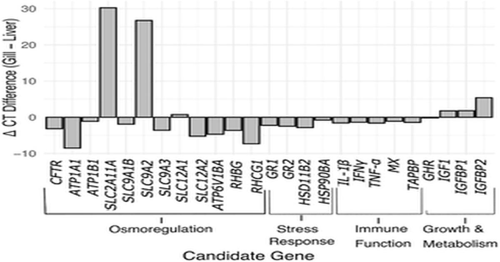

Генное транскрипционное профилирование осморегуляторного стрессового ответа у лососевых: разработка и оценка высокопроизводительных многовидовых анализов
николя Туги, Шахинур С.
Ислам, Дэниел Д.
Хит Осморегуляторный стресс является критическим фактором в благополучии и производительности лососевых при выращивании в неволе для аквакультуры и сохранения, и характеристика клеточных реакций на этот стресс может способствовать лучшему ведению сельского хозяйства.
Одним из подходов к раннему выявлению осмотического стресса является профилирование транскрипции генов, при котором для определения